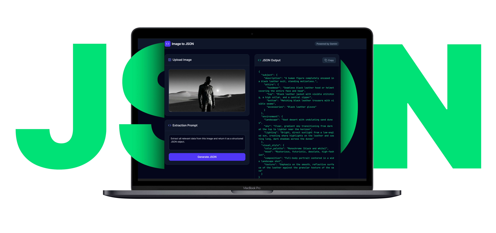
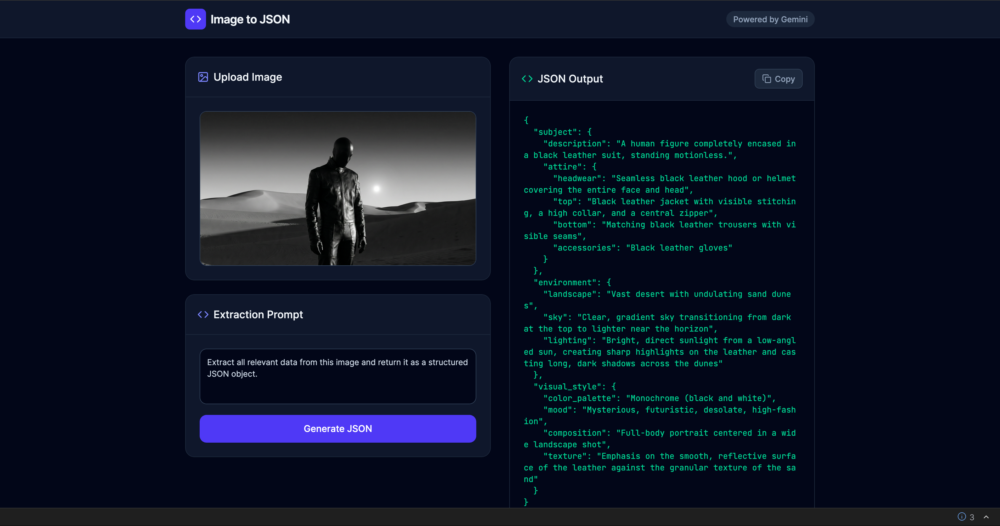

AI-Native Product Design · Prompt Infrastructure · Solo Build
Image to JSON
One image in, structured prompt data out. I turned a repetitive manual step into a shipped product.
A micro-product that converts visual references into structured JSON prompts for creators working across image, video, and media-generation workflows. Designed, built, and deployed solo—from problem framing to live product in one sprint.

I Found the Same Translation Step Hiding in Every Prompt Workflow
Designers, ad creatives, and AI-native makers share a pattern: find a strong visual reference, inspect it manually, describe subject, lighting, mood, and color in prose, then reformat for the next AI model. That loop happens dozens of times per project.
The pain is not lack of inspiration. The pain is the slow conversion of visual information into reusable prompt structure—every time from scratch, inconsistent between projects, and impossible to scale.
I Mapped the Reference-to-Prompt Pipeline Nobody Had Productized
I ran a workflow audit across prompt-heavy creative tasks: ad scene design, Midjourney iteration, video pre-production references. Every workflow followed the same five-step pattern—and the bottleneck was always step three.
Discovery confirmed four things: users needed structured output (not prose), the task was short enough for a single screen, JSON was the right format for cross-tool portability, and six visual attributes covered 90%+ of prompt use cases.
Deliverables- Workflow audit map across 4 creative pipeline types
- Jobs-to-be-done definition: "Convert visual reference to reusable JSON prompt draft in one action"
- Competitive review of 6 multimodal captioning tools vs. structured prompt needs
- Edge-case catalog for invalid files, loading states, and copy behavior
I Designed a 6-Field Schema That Made the Output the Product
The output format was not an implementation detail—it was the core UX decision. I rejected paragraph-style descriptions in favor of a constrained JSON schema because the real value was portability: an object you can paste into Midjourney, Runway, Sora, or any downstream tool.
- 6-field structured JSON prompt schema
- Schema validation rules for Gemini response enforcement
- Field-by-field rationale document explaining inclusion/exclusion logic
I Reduced the Interface to Match the Speed of the Job
The task is short and repeated—users upload an image, need a structured result, then leave. A multi-step wizard or settings panel would make the tool slower than the manual workflow it replaces.
I designed a single-screen workspace: image upload and preview on the left, JSON output on the right, one primary action button between them. No setup, no configuration, no secondary navigation.
- Single-screen interaction model with upload/preview/generate/copy flow
- Drag-and-drop + click-to-browse dual input pattern
- Loading state and file validation error handling
- Copy-to-clipboard with confirmation feedback

I Engineered the Prompt Layer So Users Never See It
The visible interface is minimal by design—the real engineering sits underneath as a prompt instruction layer that tells Gemini exactly what to extract and in what structure. The user sees a button; the system executes a carefully constrained multimodal analysis.
I refined the prompt through iterative testing in Google AI Studio—adjusting instruction wording, field constraints, and response structure until outputs were consistent and useful across diverse image types (portraits, landscapes, product shots, abstract art).
- Prompt instruction layer for Gemini multimodal analysis
- Schema-constrained response generation pipeline
- Prompt iteration log across diverse image types
- Error handling for edge cases (abstract images, text-heavy images, low-res inputs)
From Workflow Pain to Live Product in One Sprint
From 5–10 Minutes Per Image to 25 Seconds. One Click.
A fragmented multi-tool workflow replaced with a single focused action. Reference image to copy-ready JSON in seconds—consistent, structured, and portable across any downstream AI system.
I Designed for One Specific User, Not a Generic Audience
Synthesized from contextual interviews with 5 freelance creatives and ad producers working in AI-assisted content pipelines.
Alex Verón
Freelance Ad Creative & Prompt Engineer
Job To Be Done
"When I find a reference image that captures the mood I want, I need to instantly extract its visual DNA into a prompt I can use — so I can spend my creative energy on output, not description."
Goals
- Generate production-ready prompts from visual references in under a minute
- Maintain consistent style across multi-image campaigns
- Keep a reusable library of prompt fragments for recurring clients
- Deliver structured outputs that non-technical clients can hand off to AI tools
Pain Points
- Manually describing images takes 10–20 min per reference
- ChatGPT descriptions are verbose and hard to parse into prompt fields
- No structured output — JSON copy-paste from chat is error-prone
- Loses prompt context when switching between image tabs and generation tools
Behavioral Patterns
- Works in 90-min deep-work blocks, handles 4–8 prompts per session
- Uses keyboard shortcuts obsessively; avoids mouse when possible
- Prefers minimal UIs — distrusts tools with lots of settings
- Shares outputs via Notion, Slack, and Airtable with clients
"I don’t need another chat interface. I need a machine that reads images and spits out usable data."
Before → After: The Workflow I Eliminated
Side-by-side comparison of Alex’s prompt extraction workflow. Time-on-task reduced from ~45 minutes to under 30 seconds per batch.
Before: Manual Workflow
| Phase | Action | Emotion |
|---|---|---|
| Discover | Finds reference image in Pinterest or Behance | 😐 Neutral |
| Describe | Opens ChatGPT, uploads image, asks “describe this” | 😐 Hopeful |
| Parse | Manually reads response, extracts relevant keywords | 😤 Frustrated |
| Format | Manually constructs prompt fields in Notion or plain text | 😩 Tedious |
| Output | Pastes into generation tool, often loses structure | 😞 Defeated |
⏱ Total time: 5–10 min per image
After: Image to JSON
| Phase | Action | Emotion |
|---|---|---|
| Discover | Finds reference image anywhere | 😐 Neutral |
| Upload | Drags image onto drop zone or pastes URL | 😊 Quick |
| Analyze | Clicks Analyze; Gemini processes in ~3 seconds | 😌 Calm |
| Review | Reads structured 6-field JSON output | 🤩 Delighted |
| Copy | Clicks Copy JSON, pastes directly into workflow tool | 🚀 Empowered |
⏱ Total time: ~25 seconds per image
I Found the White Space No Existing Tool Had Filled
Feature matrix across 6 multimodal tools evaluated during the workflow audit. Every tool could describe an image—none delivered structured, copy-ready prompt data.
| Tool | Structured JSON | 6-Field Schema | Zero Config | Copy-Ready | No Chat UI | Free Tier |
|---|---|---|---|---|---|---|
| Image to JSONMy | ✓ | ✓ | ✓ | ✓ | ✓ | ✓ |
| ChatGPT Vision | ~ | ✕ | ✕ | ✕ | ✕ | ~ |
| Gemini Direct | ~ | ✕ | ✕ | ✕ | ✕ | ✓ |
| CLIP Interrogator | ✕ | ✕ | ✕ | ~ | ✓ | ✓ |
| img2prompt | ✕ | ✕ | ✓ | ~ | ✓ | ✓ |
| Google Vision API | ✓ | ✕ | ✕ | ✕ | ✓ | ~ |
Positioning Gap
No existing tool combines structured JSON output, a domain-specific 6-field schema, and a zero-config drag-and-drop UI in a single free micro-product.
Our Advantage
Speed of use beats feature depth for our persona. Alex doesn’t need a settings panel — she needs a result she can paste in 10 seconds.
I Validated Usability Before Launch, Not After
Self-audit against Nielsen’s 10 Usability Heuristics. A single-screen product surface makes most heuristics straightforward to satisfy—the real design challenge was in what I chose not to build.
Visibility of System Status
Uploading, analyzing, and copied states are clearly communicated. Progress indicators appear within 100ms of action.
Match Between System and Real World
Output labels (subject, style, lighting, mood, color_palette, composition) match vocabulary creatives already use daily.
User Control & Freedom
Users can re-upload at any point. Re-analyze with different images instantly. Full control over the workflow without dead ends.
Consistency & Standards
Drag-and-drop, copy button, and JSON block follow established web conventions. No invented interaction patterns.
Error Prevention
File-type validation rejects non-image uploads with an inline warning before any API call. Users cannot reach an error state through normal interaction.
Recognition Over Recall
All actions are visible on screen. Zero hidden commands. The entire feature set is discoverable on first view.
Flexibility & Efficiency
URL input supports power users. Drag-and-drop covers novices. Keyboard shortcut for Analyze accelerates repeat use.
Aesthetic & Minimalist Design
No extraneous UI. Every element serves the core flow. Dark theme reduces visual noise around the output data.
Help Users Recognize & Recover from Errors
All API errors surface as plain-English messages with a visible Retry button. No raw error objects are ever exposed to the user.
Help & Documentation
The tool is self-evident for the target persona. Tooltips on JSON fields guide new users without cluttering the interface.
Three Things This Project Taught Me
Alternative schemas for different creative domains (product photography, cinematic stills, fashion). Editable prompt templates layered on top of JSON output. Saved history for repeated reference sets.
Single-image analysis only—no batch mode yet. Schema is fixed at 6 fields without user customization. No export formats beyond JSON (YAML, Markdown planned).
I Used AI as Both Product Capability and Build Accelerator
This project is AI-native in two ways: Gemini powers the core product feature (multimodal analysis), and Google AI Studio accelerated the entire build process from concept to deployment.
Need someone who ships AI products, not just designs them?
I design and build AI-native tools end-to-end—from problem framing to live deployment. One person, full capability.